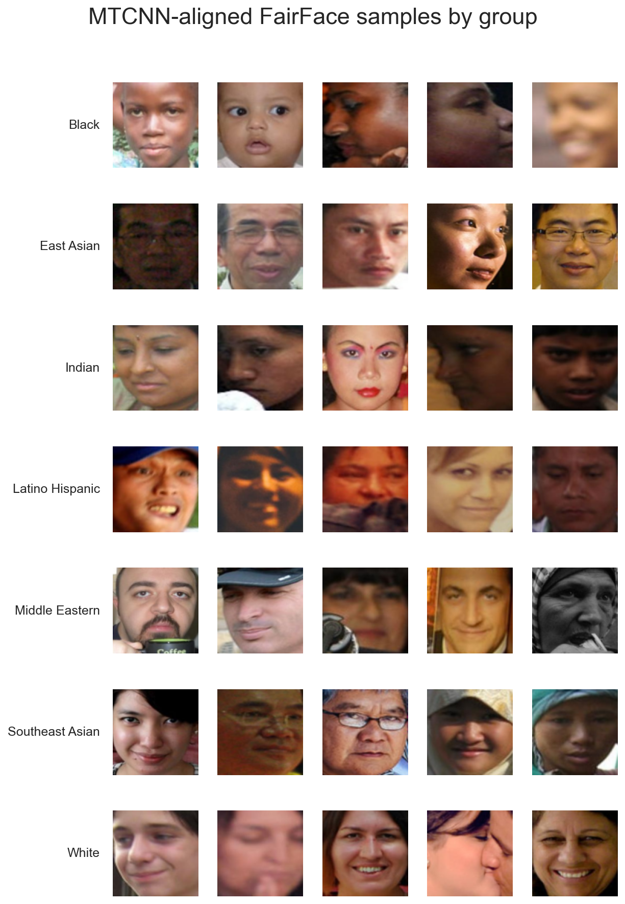
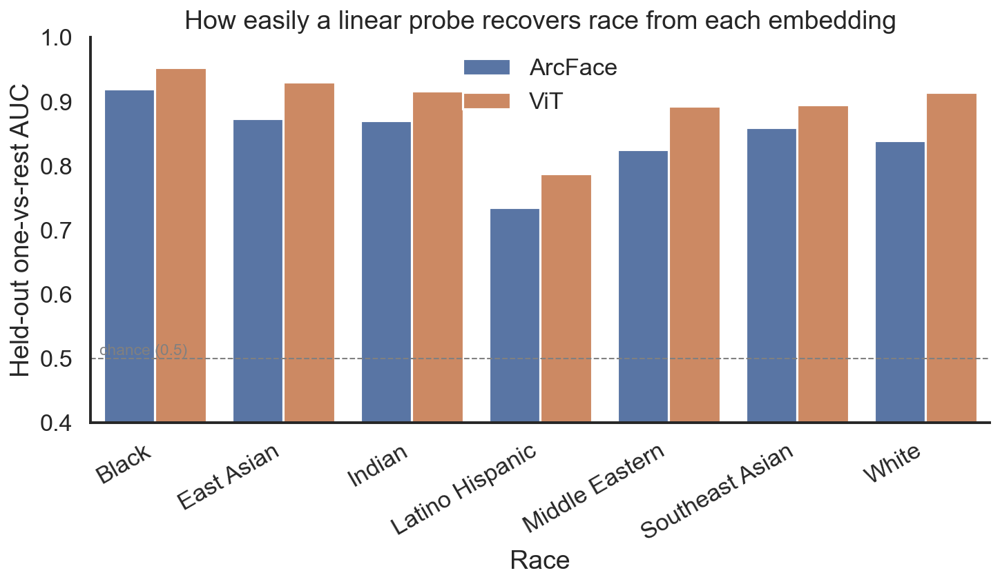
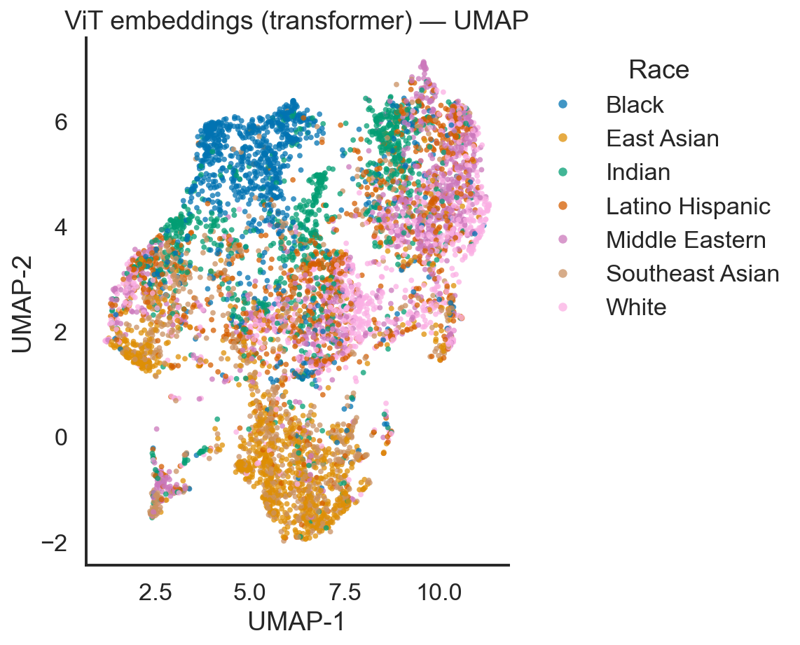

Open-source face-recognition models are now a few package installs from production, yet the embeddings they emit can quietly encode protected attributes that neither model was asked to learn. This study quantifies racial demographic leakage in two widely used, freely available embedding models — the CNN-based ArcFace and the general-purpose Vision Transformer (ViT) — on a race-balanced subset of the FairFace dataset (6,821 aligned faces across seven groups). Using cosine-similarity gaps, nearest-neighbor recovery, and held-out linear probes, I show that race is linearly recoverable from both embedding spaces far above chance: held-out one-vs-rest AUC reaches 0.85 for ArcFace and 0.90 for ViT. Strikingly, the general-purpose ViT — never trained on faces — leaks more demographic signal than the face-specialized ArcFace. I also document and correct an input-normalization bug in the original pipeline that had been feeding distorted crops to both models. I close with the compliance implications under GDPR, CCPA, and the NIST AI Risk Management Framework, and practical guidance for small teams deploying these tools.
Facial-recognition technology has become trivially accessible. Through open-source libraries such as InsightFace (ArcFace) and the Hugging Face model hub (ViT), a single developer can integrate state-of-the-art face embeddings into a product in an afternoon. That accessibility democratizes a powerful capability — and simultaneously distributes its risks to teams that may have neither the resources nor the awareness to audit what these models encode.
The central concern of this project is demographic leakage: the degree to which a model's embedding vector — a numeric fingerprint of a face — carries recoverable information about a sensitive attribute such as race, even when the model was never trained to represent it. Leakage matters because embeddings rarely stay put. They are stored, compared, clustered, and shipped between services. If race is recoverable from an embedding, then any system that retains those vectors is, in effect, processing racial data — frequently without the operator realizing it, documenting it, or obtaining consent for it.
These are not abstract risks. Face embeddings increasingly underpin consequential systems across sectors:
This study has two goals: (1) to quantify and visualize demographic bias in the embeddings of two leading open-source models, and (2) to translate those measurements into practical, regulation-aware guidance for the small teams most likely to deploy them without a dedicated fairness review.
The two models embed faces into high-dimensional vector spaces using fundamentally different architectures and training objectives.
ArcFace is a convolutional network trained specifically for face
recognition with an additive angular-margin loss that maximizes the angular
separation between identities. Because its entire objective is to tell
individuals apart, ArcFace embeddings strongly encode identity — and, as a
by-product, often carry demographic signal. I use the buffalo_l
checkpoint shipped with InsightFace, which produces 512-dimensional unit-norm
embeddings.
ViT-Base is a Vision Transformer pretrained on ImageNet-21k for
general image understanding, not faces. It divides an image into patches and
attends over them, learning broad visual features with no identity- or
demographic-specific objective. I take the [CLS] token of
vit-base-patch16-224-in21k as a 768-dimensional embedding and
L2-normalize it so cosine geometry is comparable to ArcFace.
The contrast is the point: one model is purpose-built for faces and explicitly optimized to separate people; the other is a generic feature extractor that has never seen a face-recognition label. Comparing their leakage isolates how much demographic encoding is intrinsic to learned visual representations versus introduced by face-specific training.
I use a race-balanced subset of FairFace (Kärkkäinen & Joo, 2021), a dataset explicitly constructed for balanced representation across race, gender, and age. Streaming the dataset, I retain the first 1,000 images for each of its seven race categories — Black, East Asian, Indian, Latino Hispanic, Middle Eastern, Southeast Asian, and White — for 7,000 images total. The balance is deliberate: it removes sample-size confounds so that any measured separability reflects the embeddings, not skewed class priors.
FairFace's seven categories are a coarse social construct, not ground truth about individuals. The object of study here is leakage of a labeled, sensitive attribute, not an endorsement of these categories as natural kinds.
Each image is aligned and cropped to 112×112 with MTCNN, then embedded twice — once by ArcFace and once by ViT. Of 7,000 images, MTCNN successfully aligned 6,821. From the resulting embeddings I compute three families of measurements:

The headline result is unambiguous: a simple linear probe recovers race from both embedding spaces with high reliability on held-out data. Per-group one-vs-rest AUC ranges from 0.73 to 0.95, with macro averages of 0.85 (ArcFace) and 0.90 (ViT) against a 0.5 chance baseline.

| Group | ArcFace | ViT |
|---|---|---|
| Black | 0.92 | 0.95 |
| East Asian | 0.87 | 0.93 |
| Indian | 0.87 | 0.92 |
| Latino Hispanic | 0.73 | 0.79 |
| Middle Eastern | 0.83 | 0.89 |
| Southeast Asian | 0.86 | 0.89 |
| White | 0.84 | 0.91 |
| Macro average | 0.85 | 0.90 |
Two findings deserve emphasis. First, the general-purpose ViT leaks more than the face-specialized ArcFace on every group but one. A model never trained on faces, never given an identity label, still encodes race more legibly than a model engineered specifically to distinguish people. This suggests that demographic structure is woven into generic visual features themselves, not merely introduced by face-recognition training. Second, leakage is uneven across groups: some demographics (e.g., Black, East Asian) are far more inferable than others (e.g., Latino Hispanic), meaning the privacy and disparate-impact risk is itself unequally distributed.
| Model | Cosine gap | kNN-5 acc. | Linear-probe AUC |
|---|---|---|---|
| ArcFace | 0.014 | 0.63 | 0.91 |
| ViT | 0.077 | 0.68 | 0.92 |
A telling difference appears in within-race cosine similarity. ViT clusters same-group faces tightly (0.27–0.34), while ArcFace spreads them apart (0.07–0.09). This is exactly what ArcFace's angular-margin training is designed to do — push individual identities away from one another — yet race remains linearly recoverable from ArcFace at 0.85 AUC despite that dispersion. The demographic signal is not a side effect of faces simply being close together; it is encoded along specific, learnable directions. The UMAP projections (Figure 3) make the structure visible: both spaces show demographic organization, with ViT showing notably more coherent group regions.

MTCNN's alignment keep-rate stayed in a tight band of 0.965–0.984 across all seven groups, so the upstream face detector is not a major source of disparity in this study — the leakage lives in the embeddings, not in who gets detected. Even so, in a large-scale deployment, sub-percentage differences in detection success compound into materially different failure rates across groups, and would themselves warrant monitoring under anti-discrimination obligations.
facenet-pytorch's MTCNN
defaults to post_process=True, which standardizes crops to roughly
[−1, 1]; the original code then rescaled by ×255 and clamped to [0, 255], which
zeroed out ~47% of every crop's pixels and skewed its color balance before either
model saw it. The demographic-leakage conclusion survived the bug — the distortion
is fairly consistent across faces — but the inputs were wrong. Correcting it
(post_process=False, no erroneous rescale) raised measured
leakage substantially: macro AUC moved from 0.75→0.85 (ArcFace) and 0.77→0.90
(ViT). All figures and tables in this report use the corrected pipeline.
The lesson generalizes beyond this project: preprocessing bugs can silently weaken a model's apparent behavior, and a fairness audit is only as trustworthy as the inputs feeding it. Reproducing and inspecting the data path is part of the audit, not a preliminary to it.
The demonstrated presence of recoverable demographic signal in both embedding families has direct consequences for any regulated deployment:
Both a face-specialized CNN and a general-purpose transformer encode race in their embeddings strongly enough that a trivial linear model recovers it on unseen data — at 0.85 and 0.90 AUC respectively, with the general-purpose model leaking more. Demographic information is more intrinsic to learned visual representations, and more easily extracted, than a casual integrator would assume. As these freely available tools spread into finance, healthcare, retail, and industrial settings, explicit bias measurement should become a standard, documented step before deployment — both to meet the expectations of GDPR, CCPA, and the NIST AI-RMF, and simply to use this technology responsibly. The tools are excellent; the obligation is to handle what they quietly encode with care.
Deng, J., Guo, J., Xue, N., & Zafeiriou, S. (2019). ArcFace: Additive Angular Margin Loss for Deep Face Recognition. CVPR. https://arxiv.org/abs/1801.07698
Dosovitskiy, A., et al. (2021). An Image is Worth 16×16 Words: Transformers for Image Recognition at Scale. ICLR. https://arxiv.org/abs/2010.11929
Kärkkäinen, K., & Joo, J. (2021). FairFace: Face Attribute Dataset for Balanced Race, Gender, and Age. WACV. https://arxiv.org/abs/1908.04913
Kotwal, K., & Marcel, S. (2025). Review of Demographic Fairness in Face Recognition. https://arxiv.org/abs/2502.02309
National Institute of Standards and Technology. (2023). Artificial Intelligence Risk Management Framework (AI RMF 1.0). U.S. Department of Commerce.
InsightFace. (2023). InsightFace Python Library, v0.7.3. https://github.com/deepinsight/insightface
src/bias_pipeline.py on a balanced FairFace subset (6,821 aligned faces).